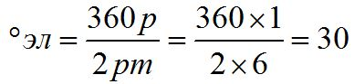
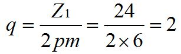
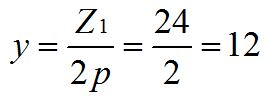
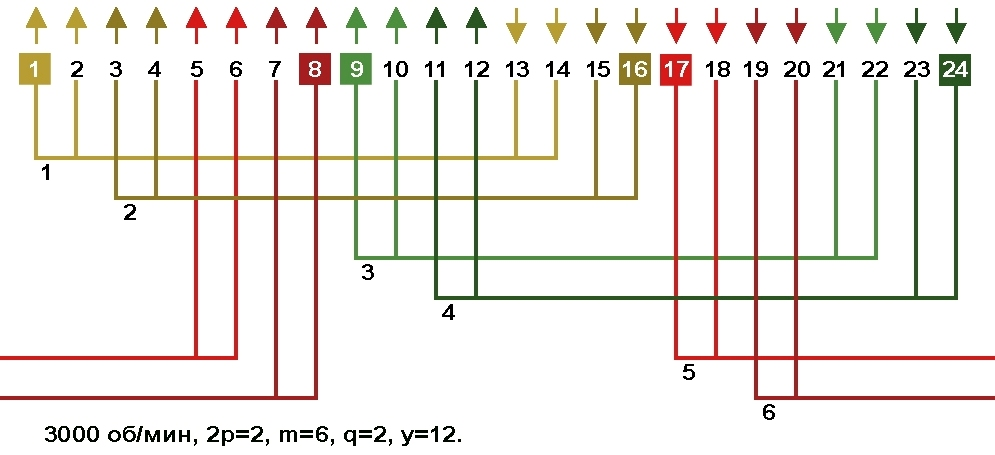
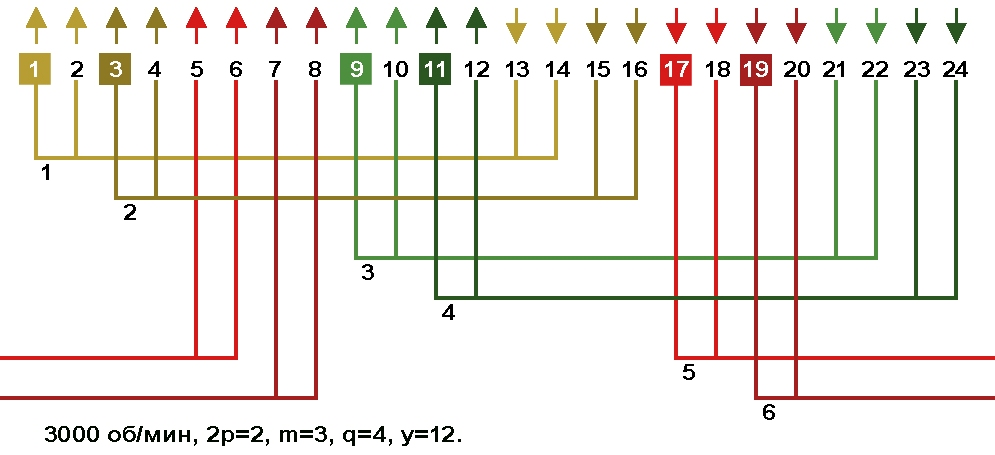
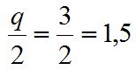
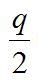
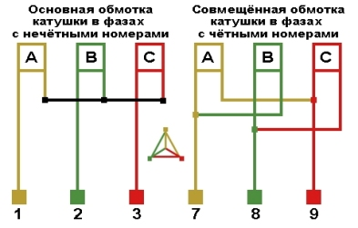
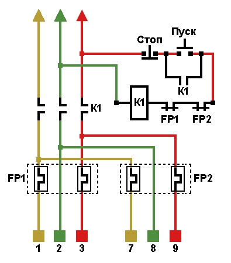

Перейти на главную страницу справочника.
Электродвигатели с совмещёнными обмотками.
Обмотка двигателей с совмещёнными обмотками может быть однослойной, одно-двухслойной, двухслойной и трёхслойной с диаметральным или укороченным шагом.
Схемы укладки двигателей с совмещёнными обмотками для замены обычных обмоток.
| Число пазов | Обороты в минуту | ||||||
| 3000 | 1500 | 1000 | 750 | 600 | 500 | 375 | |
| 12 | |||||||
| 18 | |||||||
| 24 | |||||||
| 27 | |||||||
| 30 | |||||||
| 36 | |||||||
| 42 | |||||||
| 45 | |||||||
| 48 | |||||||
| 54 | |||||||
| 60 | |||||||
| 72 | |||||||
| 96 | |||||||
Совмещённые обмотки с параллельным соединением фаз.
Схема соединений совмещённых обмоток с параллельным соединением фаз.
{kind=link}
{kind=link}
Совмещённые обмотки с последовательным соединением фаз.
Схема соединений совмещённых обмоток с последовательным соединением фаз.
{kind=link}
{kind=link}
Составление схем укладки для совмещённых обмоток на основе шестифазных схем укладки.
- Совмещённые обмотки выполняются по схемам укладки шестифазных электродвигателей, в которых первые три фазы соединяются в звезду, а четвёртая пятая и шестая фазы в треугольник. Данная обмотка подключается к трёхфазной сети, поэтому требуется соответствующий пересчёт обмоточных данных. Ширина сплошной фазной зоны в шестифазных обмотках 30 электрических градусов.
- Для примера выполним расчёт шестифазной обмотки для электродвигателя 3000 об/мин, Z1=24.
Ширина сплошной фазной зоны шестифазной обмотки в электрических градусах:
Число пазов на полюс и фазу и количество пазов в сплошной фазной зоне шестифазной обмотки:
Диаметральный шаг по пазам:
- На Рис. 1 схема укладки шестифазной равносекционной однослойной обмотки. Средний шаг по пазам диаметральный. Катушка №1 = Первая фаза, Катушка №3 = Вторая фаза, Катушка №5 = Третья фаза, Катушка №2 = Четвёртая фаза, Катушка №4 = Пятая фаза, Катушка №6 = Шестая фаза.
Рис. 1 
{kind=link}
- Что бы подключить выше показанную шестифазную обмотку к трёхфазной сети и сохранить при этом направление мгновенных значений тока в фазных зонах и полюсах, нужно изменить начало фаз по пазам в четвёртой, пятой и шестой фазах т.е. в катушках №2, №4 и №6.
- На Рис. 2 схема укладки равносекционной трёхфазной однослойной совмещённой обмотки. Средний шаг по пазам диаметральный. Катушки с нечётными номерами №1, №3 и №5 соединяются в звезду, это основная обмотка. Катушки с чётными номерами №2, №4 и №6 соединяются в треугольник, это совмещённая обмотка. Далее потребуется соответствующий пересчёт обмоточных данных.
Так как ширина сплошной фазной зоны в шестифазных обмотках 30 электрических градусов, то и сдвиг между основной и совмещённой обмоткой всегда будет 30 электрических градусов.
Рис. 2 
{kind=link}
- Если у выше показанной схемы последовательно соединить катушки №1 с №2, №3 с №4, №5 с №6, получится обычная трёхфазная обмотка с диаметральным шагом.
Составление схем укладки для совмещённых обмоток на основе пространственного сдвига обмоток.
- Для уменьшения вылета лобовой части и экономии провода лучше использовать обмотку вразвалку. Для примера возьмём схему укладки однослойной обмотки вразвалку 1500 об/мин, Z1=36 с шагом у=9;7+7.

- Число пазов на полюс и фазу q=3.
Для расчёта числа пазов сдвига обмоток нужно число пазов на полюс и фазу разделить на 2:
- Сдвиг совмещённой обмотки от основной в данном случае мы можем выполнить на один или два паза.
Схема укладки двухслойной совмещённой обмотки, при сдвиге обмоток на один паз.
Расширение фазной зоны на один паз.
{kind=link}
Схема укладки двухслойной совмещённой обмотки, при сдвиге обмоток на два паза.
Расширение фазной зоны на два паза.
{kind=link}
- Для обычных обмоток 1500 об/мин, Z1=36 рекомендуемое производителем расширение фазной зоны как на один, так и на два паза. Чем больше число пазов расширяющих фазную зону, тем ближе кривая магнитного потока к синусоиде, но чрезмерное увеличение числа пазов расширяющих фазную зону ведёт к ухудшению КПД, поэтому придерживаемся рекомендаций производителей электродвигателей.
{kind=link}
{kind=link}
- Для нахождения числа пазов расширяющих фазную зону рекомендованных производителем, нужно число пазов на полюс и фазу разделить на 2:

Недостатки совмещённых обмоток.
- У совмещённых обмоток наблюдается уменьшение пускового тока и при частых пусках электродвигателя даёт экономию электроэнергии. Но это не является достоинством, а наоборот говорит о главном недостатке совмещённых обмоток. Из-за разброса параметров в обмотках звезды и треугольника, в момент перегрузки происходит перераспределение магнитных потоков. В соединении звезда магнитный поток и ток уменьшаются, а в соединении треугольник магнитный поток и ток увеличиваются, так как обмотка соединённая в треугольник не может пропустить ток больше допустимого по сечению провода и происходит снижение пускового тока.
- При аварийной перегрузке электродвигателя обмотка, соединённая в треугольник загружена больше чем обмотка соединённая в звезду и сгорает из-за недопустимой плотности тока в проводе.
- Для выполнения защиты обмотки с параллельным соединением фаз, приходится внутреннее соединение звезды и треугольника не делать, а шесть выводов звезды и треугольника присоединять к клеммной колодке. Ток тепловых реле FP1 и FP2 должен соответствовать 50% от номинального тока электродвигателя.


07.12.2014 г.